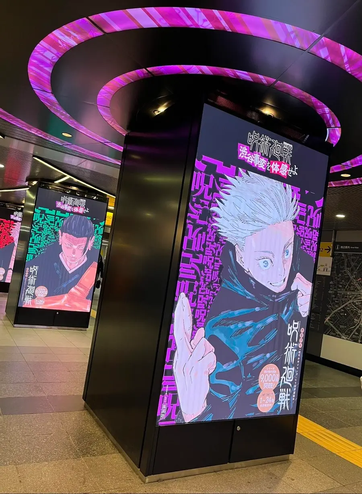

A trip to Tokyo is a journey to the thin veil between reality and the world of fantasy. Whether you are a devoted manga fan or simply wish to feel the pulse of modern Japan, this two-day itinerary will take you from the underground labyrinths of Shibuya to the soaring skyscrapers of Roppongi.
Day 1: Shibuya; Surrounded by Curses and Fashion
On this day, all locations are within walking distance, so there is no need for taxis or subways once you arrive at the hub.
Shibuya Station: Where the Incident Began
Start your exploration at the Hachiko Exit. After snapping a photo with the legendary loyal dog statue, head deep underground to the Fukutoshin Line platforms. This is the exact site where Satoru Gojo faced Jogo and Hanami in a breathtaking battle before being sealed in the "Prison Realm." The narrow corridors and subway platforms, particularly Exit 13, are haunting reminders of the bloody "Shibuya Incident" struggles.
[Summary or Quick Tips]
• Point One
• Point Two
Conclusion
بخش پایانی مقاله شما در اینجا قرار میگیرد.